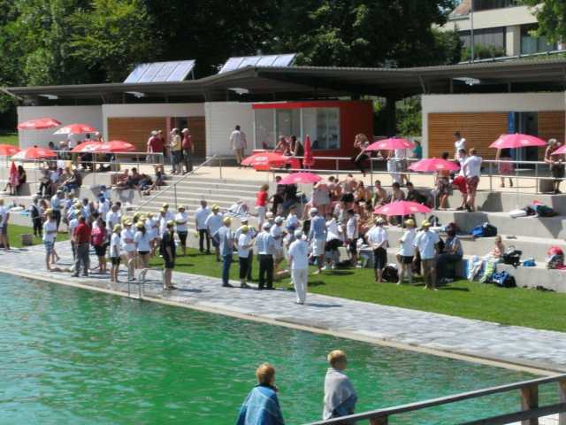

Nun ist auch Heinz anwesend, sowie Turnierleiter Jochen, leider fehlt dieses Mal Leo.

Die Teilnehmer der Challenge wurden anschließend begrüßt.


Anschließend konnte das Turnier dann in lockerer Atmosphäre
starten, die drei Laufenburger Spieler Heinz, Benno und Leo spielten gegen
die Konkurenten
Francois, Joel und Pieurette, im Modus jeder Laufenburger gegen jeden Mehuner.
Beobachtet werden sie hier von "Fan" Tobias und dem Murger Bürgermeister
Adrian Schmidle. Am Ende gab es doch einen recht deutlichen 8:1 Sieg für
unsere Recken, wobei der Spaß im Vordergrund stand.